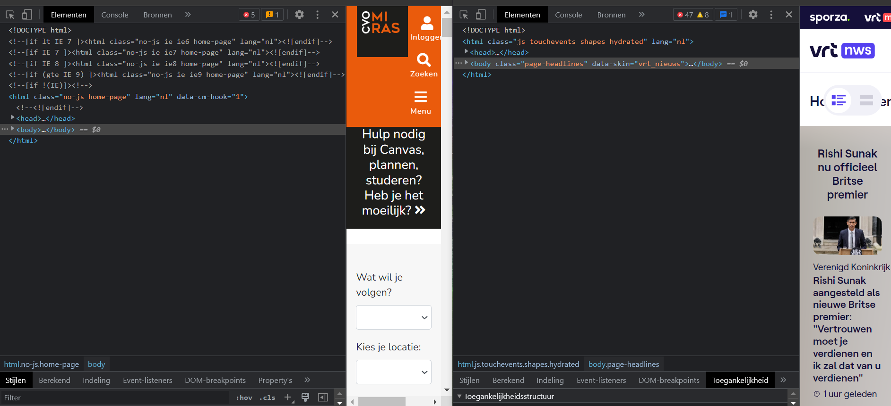

Vergelijken van de broncode.
Er zijn vooral grote verschillen in de hoeveelheid scripts dat er zijn. Bij de ene pagina is dat veel meer dan bij de andere. Beiden hebben ze linken met externe stylesheets.
- 
Er zijn vooral grote verschillen in de hoeveelheid scripts dat er zijn. Bij de ene pagina is dat veel meer dan bij de andere. Beiden hebben ze linken met externe stylesheets.